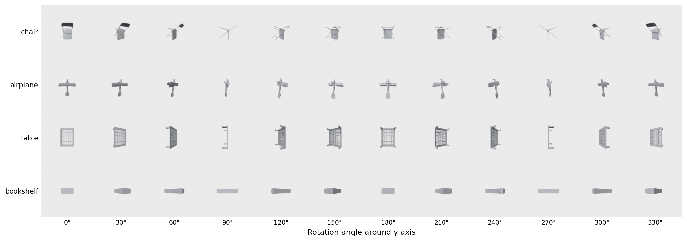
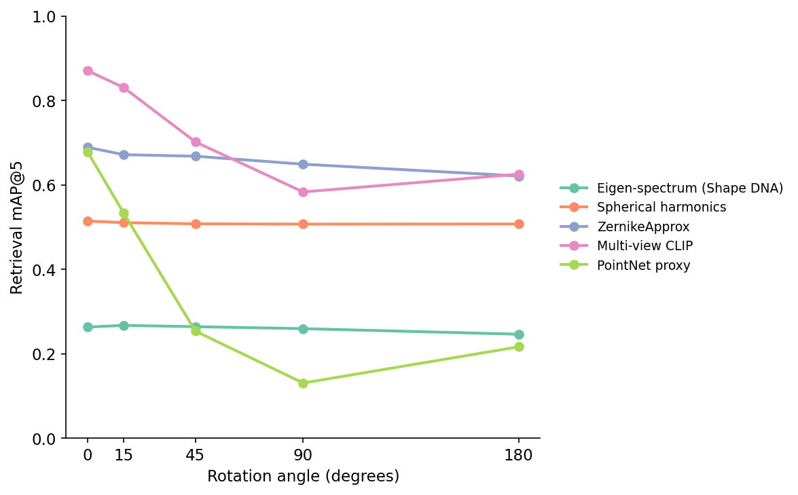
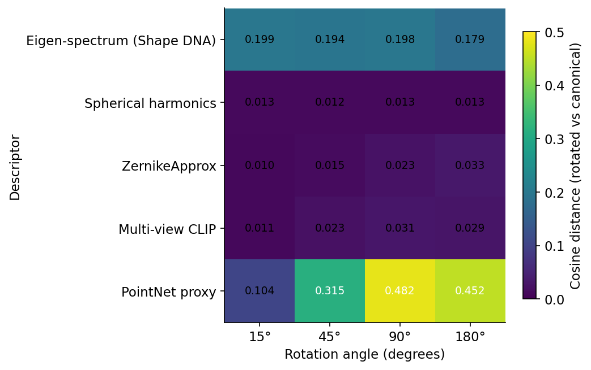
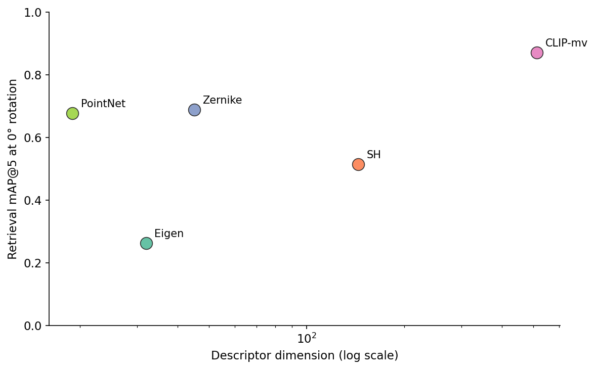
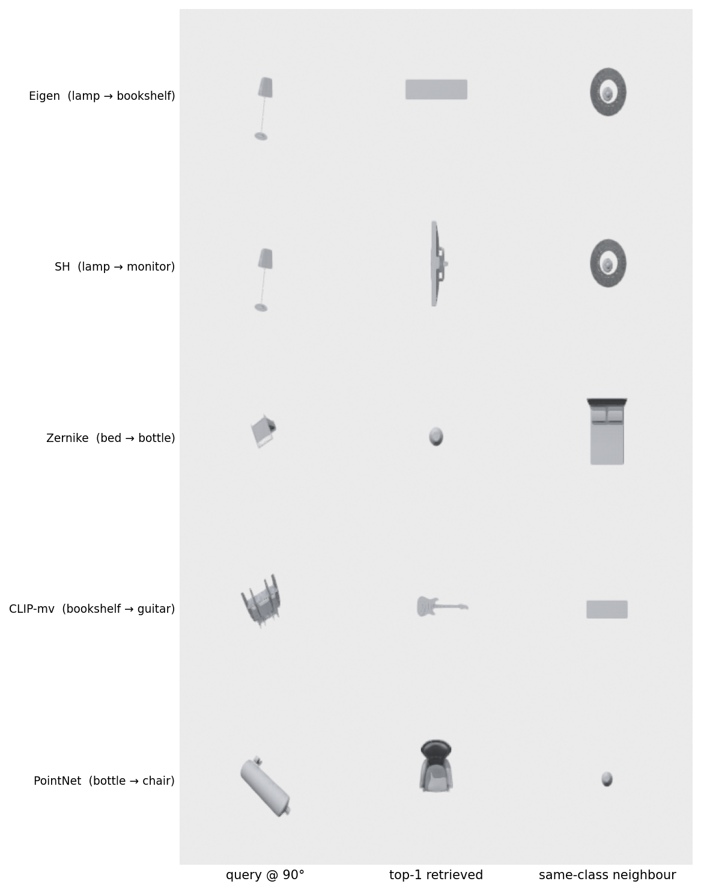
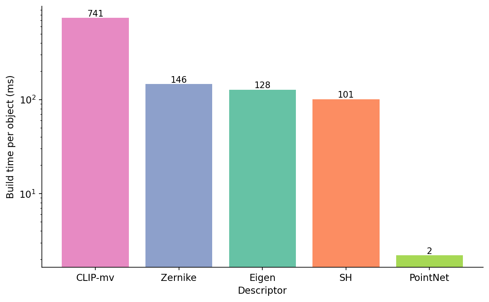
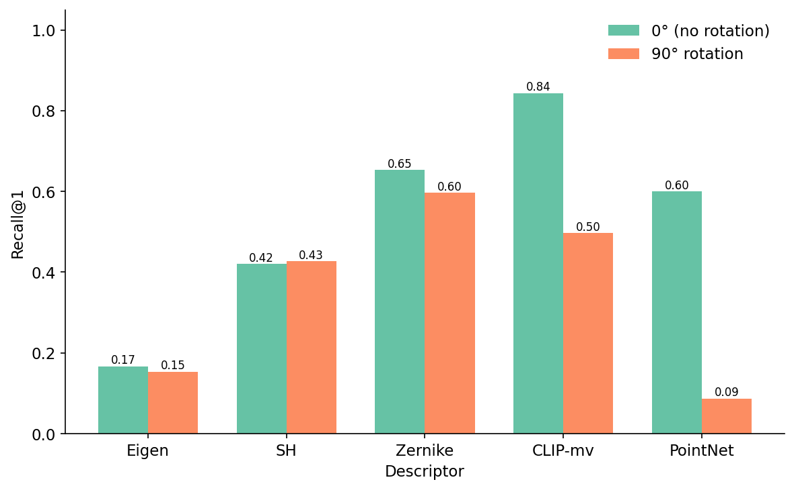

I took the multi-view CLIP pipeline from the last post and turned the query chair upside down. Retrieval@5 mAP fell from 0.87 to 0.58. The pixels the encoder saw changed; the encoder did not know they were the same chair.
That is the question this post answers, on real numbers, end-to-end. Five shape descriptors. One 300-mesh, 10-class slice of ModelNet40, rotated through 15°, 45°, 90°, and 180° around random SO(3) axes. Cosine retrieval on a flat FAISS index. Which descriptor degrades, by how much, and at what cost in dimension and build time? The spread at 90° runs from 0.65 down to 0.13 — and the descriptor that looks fine at 0° turns out to be the catastrophic one.

The strip is the trap. Reading down a row, your eye effortlessly tracks "still a chair." A fixed-camera image encoder reads twelve different photos. Where the descriptor lives — on the geometry, or on the pixels — is what decides whether it has a chance.
Every contestant gets the same input: the mesh, centered on its centroid, scaled to the unit sphere, and (because the cotangent Laplacian and the radial occupancy grid both choke on 90,000-vertex airplanes) decimated once at load time to at most 2,000 faces. After that the five descriptors take five different paths.
%%{init: {'theme': 'neutral'}}%%
flowchart LR
M[ModelNet40 mesh] --> N[centroid + unit sphere]
N --> D1[SH power spectrum]
N --> D2[ZernikeApprox]
N --> D3[Laplace-Beltrami eigen]
N --> D4[PointNet proxy]
N --> D5[8-view CLIP mean-pool]
D1 --> G[cosine FAISS index]
D2 --> G
D3 --> G
D4 --> G
D5 --> G
Q[SO 3 rotated query] --> G
G --> R[top-5 retrieval mAP]
Spherical harmonics (Kazhdan 2003) casts rays from the origin, samples the mesh's radial occupancy on a sphere at 16 radii × 32×32 angular bins, projects each radial shell onto the first 9 spherical-harmonic bands, and takes the per-band power. Power is invariant to rotation by the addition theorem; the descriptor is (16 × 9) = 144 floats.
ZernikeApprox voxelizes the mesh on a 32³ grid, takes 3D geometric moments, projects onto a basis indexed by (n, l, m) with n ≤ 8, then collapses over m via F_{n,l} = sqrt(sum_m |c_{n,l,m}|^2). That collapse is the rotation invariant — the same identity Novotni 2003 uses. The implementation here bins the radial part rather than using the full Zernike polynomial, so it is properly named ZernikeApprox. The descriptor is 45 floats.
The Laplace-Beltrami eigenspectrum (Reuter 2006, "Shape DNA") builds the cotangent Laplacian and lumped-area mass matrix, then solves the generalized eigenproblem for the 32 smallest eigenvalues. The spectrum is invariant to isometry — rotation, translation, and any bending that preserves intrinsic distances. It is the only descriptor here with a mathematical guarantee, and the only one that ignores extrinsic shape entirely.
The PointNet proxy samples 1,024 surface points, centers and scales them, takes the three principal eigenvalues of the point covariance, and concatenates a 16-bin histogram of the normalized z-component of each point. The kit ships this as a placeholder for a real PointNet checkpoint; the geometric content is roughly what a frozen feature head would extract before the classification layer. The descriptor is 19 floats. This is the only descriptor here whose invariance comes from the input pipeline (PCA alignment), not from the math.
Multi-view CLIP is the Post 05 pipeline with CLIP swapped in for DINOv2: render eight views through Open3D, encode each, mean-pool the eight 512-D vectors. The import is one line:
from medium20.render_kit import horizontal_ring, render_open3d
cams = horizontal_ring(n=8, elev_deg=20)
imgs = render_open3d(mesh, cams, image_size=224) # (8, 224, 224, 3)
Post 05's headline number is DINOv2-mean at 0.763 on its 200-object pool; CLIP-mean on the same pool sat at 0.717. The 0.870 here is the same CLIP encoder on this post's larger 300-object, 10-class pool — different gallery, so don't expect the digits to line up. The descriptor is 512 floats.

There are four shapes of behavior on this plot, and they are exactly the four things rotation invariance can mean.
Spherical harmonics has the invariance built into its math: it moves by 0.7 points of mAP across 180°. The power-sum collapse over the m index makes the descriptor a function of the SH band's total energy, which is invariant to any rotation. The only drift comes from the radial occupancy grid's discretization — at 16 radii × 32 azimuthal bins, a rotation by 15° moves a few rays into different cells. ZernikeApprox does the same trick on its m index and the same discretization at 32³ voxels; it moves 6.7 points from 0° to 180°, which is the cost of voxelizing at a finite resolution.
Laplace-Beltrami eigenvalues have it built into the geometry: they are invariant by Reuter's theorem. The line in Figure 3 sits at 0.26 across every rotation. The reason it does not sit higher is the same reason it sits flat: 32 eigenvalues capture intrinsic shape — the bending modes of the surface — and the gallery's 10 ModelNet40 classes include several that are intrinsically similar (a flat table and a flat bookshelf both have a low-rank spectrum dominated by their two big areas). For class-level retrieval, intrinsic geometry is the wrong signal. For deduplication of variants of the same object, it would be the right one.
Multi-view CLIP has it built into the data pipeline: it slides gracefully. The eight rendered views span the horizontal ring at 45° increments, so a query rotated by 15° lands within 22° of two gallery views; by 90° the nearest gallery view is 45° away and the encoder sees a different image. At 180° mAP recovers to 0.63 because some ModelNet40 classes (chairs, tables, monitors) are roughly symmetric front-to-back, so a flipped query still resembles a flipped gallery shot.
The PointNet proxy has none of these: it starts at 0.68 — competitive with Zernike at 0° — and falls off a cliff. The reason is the canonical PCA alignment inside pointnet_features: the function centers the points, sorts the three covariance eigenvalues by magnitude, and uses the sorted eigenvalues plus a z-axis histogram. A 90° rotation can swap two of those eigenvalues, and the histogram is taken on the new z-axis, which is now the old x or y. The descriptor sees a different object. This is the lesson the post sells: invariance has to come from somewhere — the math, the geometry, the rendering, or an augmentation regime — and if none of those is present the descriptor collapses fast.
Eigen-spectra has the only formal guarantee on this plot. The line in Figure 3 is the flattest of the five (0.024 mAP variation across all four rotations). And yet its mAP is the lowest at every angle. That is not a bug; it is a feature of the guarantee. By definition Shape DNA throws away every extrinsic property — pose, orientation, the difference between a chair-shaped surface and a chair-shaped-and-also-tilted-leftward surface. What survives is the spectrum of the Laplace-Beltrami operator on the abstract 2-manifold, which is what you want for an intrinsic shape match and not what you want for "find me chairs in this gallery."
Try the same descriptor on a deduplication task where the gallery contains 50 variants of the same chair model with different decorations and you would expect Shape DNA to be the strongest signal in this lineup. That experiment is left for another post. The point for now is that guaranteed invariance and discriminative power trade against each other — you don't get both for free, and the right pick depends on what your retrieval task actually is.
The mAP plot tells you what the retrieval engine sees. The stability plot tells you what the descriptor itself is doing.

Read Figure 4 against Figure 3. The two best-behaving descriptors in Figure 3 (SH and Zernike) sit at near-zero drift here. The catastrophic descriptor (PointNet at 90°) shows a 0.48 cosine drift — the rotated descriptor points nearly orthogonal to the canonical one. Eigen is the anomaly: high cosine drift, flat mAP. The reason is that "drift in cosine space" is a global statement about every coordinate, while "drift in retrieval rank" depends only on whether the closest gallery neighbour changes. The eigen-spectrum has a 0.2 cosine drift that hits every gallery entry equally — the rotated chair's eigen-vector points in a slightly different direction, but so does the nearest-neighbour chair's eigen-vector under the same rotation regime, and the rank order is preserved.
This is the part of the experiment that surprised me. I expected the stability heatmap to be a one-to-one predictor of the mAP plot. It is not. Stability and mAP are correlated, not identical. For five out of five descriptors the sign of the relationship holds (more drift, worse mAP), but the magnitudes disagree by an order of magnitude in places.

The scatter is what you look at when you have a memory budget. A FAISS-flat index of 1 million objects in float32 needs N × dim × 4 bytes: 128 MB for eigen, 180 MB for Zernike, 576 MB for SH, 2 GB for multi-view CLIP. The build time multiplies the same way (Figure 7).
For a 100,000-object gallery, all four classical descriptors fit easily in RAM on a laptop. For 100 million, CLIP's 200 GB needs an HNSW index with disk fallback, while Zernike at 18 GB still fits. Post 11 builds that index. For Post 06 the takeaway is the slope: ZernikeApprox sits at the knee of the curve — most of the discriminative power that CLIP buys with 10x more bytes.
I picked the single most-penalized failure per descriptor at the 90° rotation: the query whose correct-class top-1 fell farthest down the ranked list. Render each as a row.

The pattern across the five rows is that each descriptor's worst failures are exactly where its priors are weakest. Eigen sees abstract surface geometry; tall thin objects all look alike intrinsically. SH and Zernike see radial occupancy at a fixed grid; objects with similar bounding-sphere fills get confused. CLIP-mv sees pixels; objects that share a silhouette under the rotation get confused. The PointNet proxy sees PCA-aligned axis statistics; one rotated dominant axis is enough to swap everything.
These are not pathological edge cases. The proportion of queries with the wrong top-1 at 90° is 50% for CLIP-mv (1 − recall@1 = 0.50) and 91% for PointNet (recall@1 = 0.09). In a real retrieval system these are the ones that drive user complaints, because they are the ones where the system confidently returns the wrong answer at rank 1.

The build-time gap matters when the gallery is large. A research benchmark with 500 objects pays attention only to retrieval mAP. A production index with 10 million objects pays attention to mAP per dollar, and that math favours SH or Zernike unless multi-view CLIP's extra 18 points of mAP buys back the cost in downstream conversions.

The 0° vs 90° recall@1 chart is the slide I would show to anyone who evaluates a 3D similarity model only on canonical-pose retrieval. PointNet at 0° (0.60) and Zernike at 0° (0.65) look like the same descriptor. At 90° they are different descriptors, and one of them is broken.
Table 1. Bakeoff summary. Build time and dimension are from data/descriptor-meta.csv; mAP columns are from data/retrieval-at-rotation.csv. Bold values are best in column. Multi-view CLIP wins absolute accuracy at every angle; Zernike wins on the rotation gap; eigen-spectrum wins on bytes per object.
| Descriptor | mAP@5, 0° | mAP@5, 90° | mAP@5, 180° | Dim | Build (ms) | Training? |
|---|---|---|---|---|---|---|
| Multi-view CLIP | 0.870 | 0.583 | 0.625 | 512 | 741 | pretrained |
| ZernikeApprox | 0.689 | 0.649 | 0.621 | 45 | 146 | no |
| PointNet proxy | 0.677 | 0.130 | 0.216 | 19 | 2 | no |
| Spherical harmonics | 0.514 | 0.507 | 0.507 | 144 | 101 | no |
| Eigen-spectrum | 0.263 | 0.259 | 0.246 | 32 | 128 | no |
Source: data/retrieval-at-rotation.csv (25 rows), data/descriptor-meta.csv (5 rows).
True rotation invariance is rarer than the literature suggests. Of these five descriptors only spherical harmonics and the eigen-spectrum are flat across all rotations in this experiment — 0.7 and 1.7 mAP points of variation respectively. ZernikeApprox is nearly flat, with a 6.7-point drop from 0° to 180° that traces directly to voxel discretization. Multi-view CLIP fakes invariance well at small angles and worse at large ones; the 8-view ring covers most azimuthal rotations within 22.5° but cannot help with the in-plane flip at 180°. The PointNet proxy is not rotation-invariant at all; its appearance of invariance at 0° is purely an artifact of the PCA alignment surviving the canonical pose. The verdict for vanilla PointNet (without explicit rotation augmentation) generalizes: any descriptor whose "invariance" comes from a one-time alignment step is brittle at exactly the rotations where the alignment is ambiguous, which is exactly the cases you cannot detect from a canonical-pose evaluation.
The cheapest practical fix for the PointNet collapse is rotation augmentation at training time — show the network many rotated copies and let it learn invariance. How many copies? That is Post 10. Post 07 takes ZernikeApprox apart and derives the invariance identity from scratch, so you can see exactly where the 0°→180° discretization cost comes from. The path through this post is: if your retrieval task has to tolerate arbitrary rotations and you have no training data, ZernikeApprox is the descriptor I would reach for first. If you have pre-trained image weights and a GPU, multi-view CLIP gives you 18 more points of mAP at the canonical pose, gracefully degrading. If your task is intrinsic-shape deduplication, eigen-spectra is the only descriptor in this lineup that gives you a guarantee, and you should accept that the absolute mAP will look terrible on class-level retrieval.
Table 2. Which descriptor I would reach for, by use case. The rationale for each pick is the row that won the corresponding column in Table 1 above.
| Use case | Pick | Why |
|---|---|---|
| Pure-geometry retrieval (CAD, no textures) | Spherical harmonics | Rotation-tolerant by design, 144-D, no GPU. |
| Textured / general 3D retrieval | Multi-view CLIP | Highest mAP at canonical; degrades gracefully under rotation. |
| Tiny embedding budget (<256 bytes/object) | Eigen-spectrum (Shape DNA) | 32 floats, provably isometry-invariant. |
| No training data, no GPU | ZernikeApprox | 45-D, rotation-invariant magnitudes, pure CPU. |
Source: data/recommendation.csv (4 rows).
Post 07 opens the box on this same ZernikeApprox implementation — derives the rotation-invariance identity from scratch, shows the per-(n,l) basis grid, runs the unit-test gauntlet on a sphere and a cube, and pushes the resolution and n_max knobs to find the production knee.
Compute: lightsail Tesla T4, conda env 3d-dedup, package medium20 installed editable. Framework versions: Python 3.10.20, torch 2.11.0+cu126, transformers 5.6.1, scipy 1.15.3, faiss-cpu 1.14.1, numpy 2.2.6, trimesh 4.11.5, open3d 0.19.0. Data: ModelNet40 train split, first 30 objects from each of 10 classes (chair, airplane, table, bookshelf, bed, sofa, monitor, guitar, lamp, bottle); 300 meshes total, normalized and decimated to ≤2,000 faces. Rotation axes are random unit vectors drawn from a numpy.random.RandomState(42) and saved to data/rotation-seeds.csv. Reproduce with python code/main.py --n-per-class 30 --n-jobs 4 on a host with medium20 installed; the run takes about 65 minutes on a Tesla T4. Figures are regenerated with python code/make-figures.py and python code/make-rotation-strip.py. Public data only; CLIP weights are openai/clip-vit-base-patch32.
Every number in this post traces to a CSV in data/: retrieval-at-rotation.csv for the five mAP and recall columns at each rotation, descriptor-meta.csv for dimensions and build times, stability.csv for the heatmap, failure-pairs.csv for the failure gallery, recommendation.csv for Table 2. The 0.870 CLIP-mv ceiling is the one to remember — it is the floor of what Post 14's threshold calibration has to defend.
Part 6 of 20 · Back to the series index